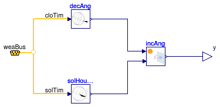
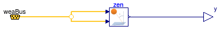

Package with models to compute solar geometry
Extends from Modelica.Icons.VariantsPackage (Icon for package containing variants).
| Name | Description |
|---|---|
| IncidenceAngle | Solar incidence angle on a tilted surface |
| ZenithAngle | Zenith angle |
| Collection of models that illustrate model use and test models | |
| Package with base classes for Buildings.BoundaryConditions.SolarGeometry |
Solar incidence angle on a tilted surface

This component computes the solar incidence angle on a tilted surface. For a definition of the parameters, see the User's Guide Buildings.BoundaryConditions.UsersGuide.
Extends from Modelica.Blocks.Icons.Block (Basic graphical layout of input/output block).
| Type | Name | Default | Description |
|---|---|---|---|
| Angle | lat | Latitude [rad] | |
| Angle | azi | Surface azimuth [rad] | |
| Angle | til | Surface tilt [rad] |
| Type | Name | Description |
|---|---|---|
| output RealOutput | y | Incidence angle [rad] |
| Bus | weaBus |
Zenith angle

This component computes the zenith angle, which is the angle between the earth surface normal and the sun beam. For a definition of the parameters, see the User's Guide Buildings.BoundaryConditions.UsersGuide.
Extends from Modelica.Blocks.Icons.Block (Basic graphical layout of input/output block).
| Type | Name | Default | Description |
|---|---|---|---|
| Angle | lat | Latitude [rad] |
| Type | Name | Description |
|---|---|---|
| output RealOutput | y | Zenith angle [rad] |
| Bus | weaBus |